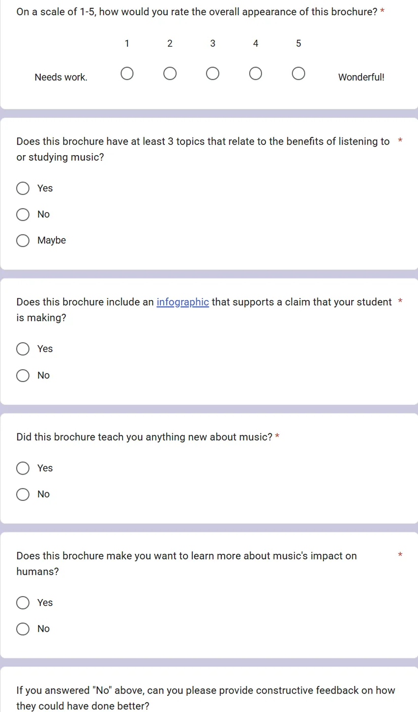
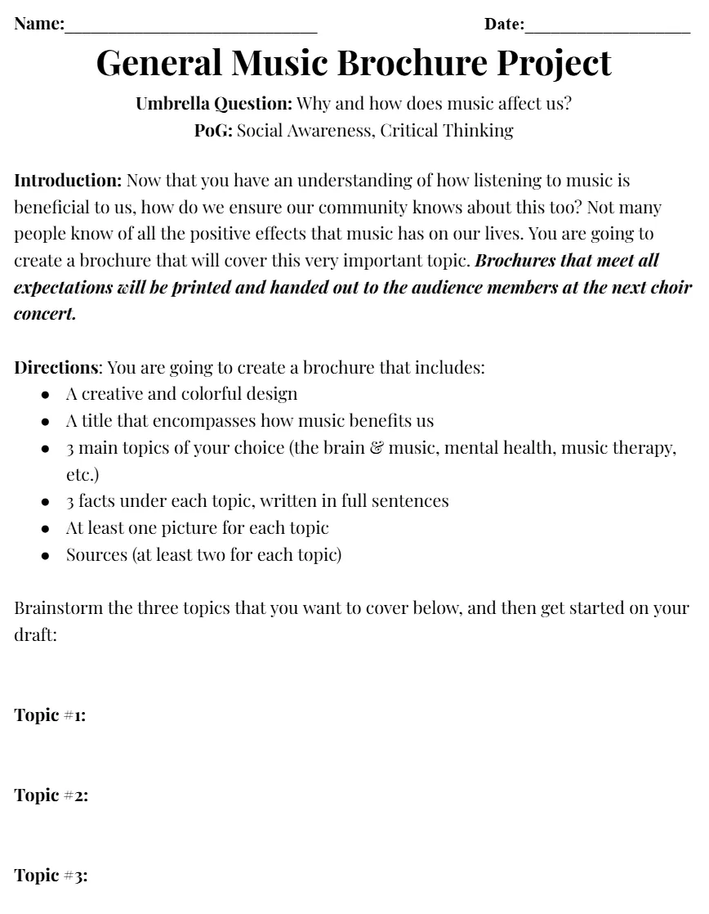
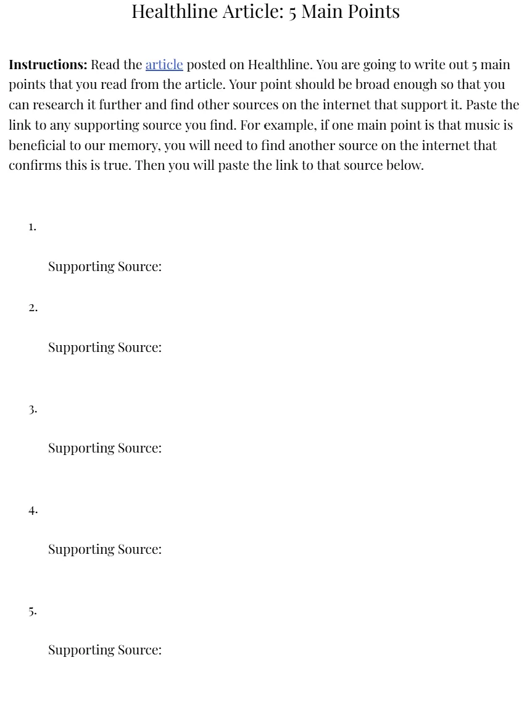
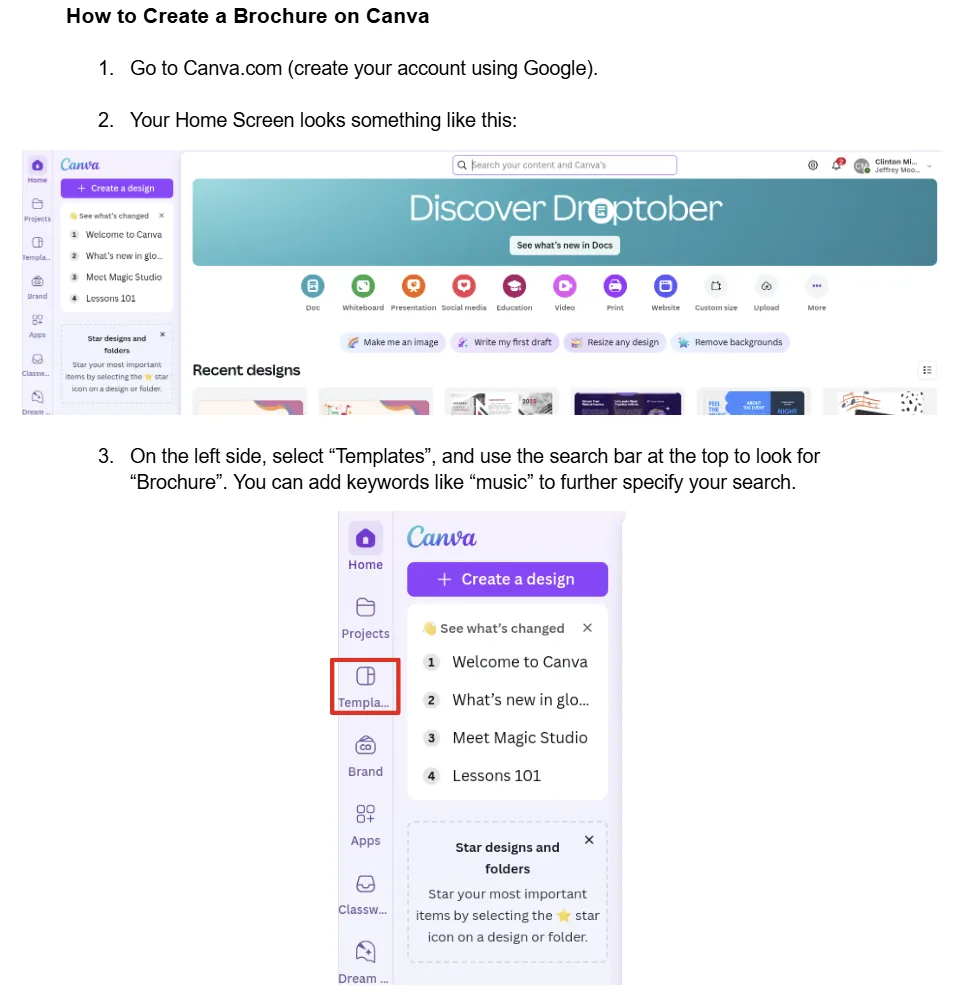
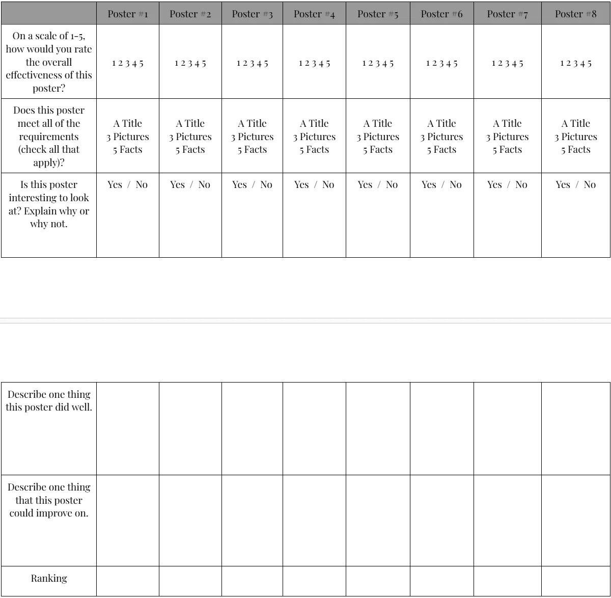

Case Study
Transforming a classroom research unit into a stakeholder-facing communication campaign about the benefits of music.

Learning Challenge
Students questioned the relevance and value of music education. The learning challenge was to help learners understand evidence-based benefits of music while also communicating those benefits to a broader audience.
Solution
I designed a research-based project in which learners identified evidence-supported claims, synthesized findings, created stakeholder-facing brochures, used peer feedback to improve their work, and gathered community responses through a QR-code survey.
Design decisions
Learners created materials for real community stakeholders rather than only submitting work to a teacher.
The 5 Points assignment required learners to validate claims across multiple sources before creating the brochure.
A Canva job aid addressed a recurring technical barrier and allowed learners to complete their deliverables more independently.
Artifacts
Click any artifact to enlarge it.




Results & impact
Reflection
The strongest design decision was expanding the project beyond a classroom assignment. By giving learners an authentic audience, the project became a knowledge-transfer and advocacy experience rather than a simple research activity.